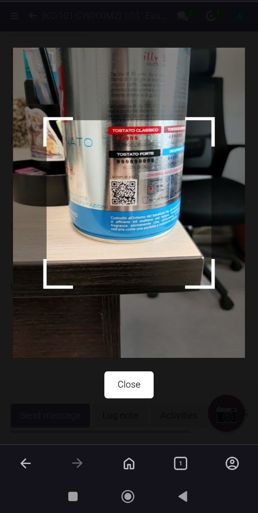
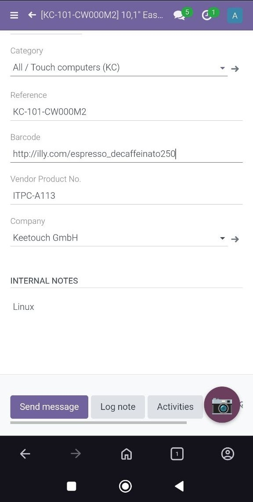
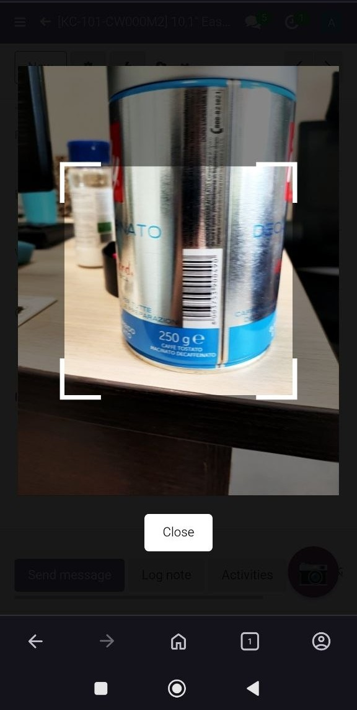
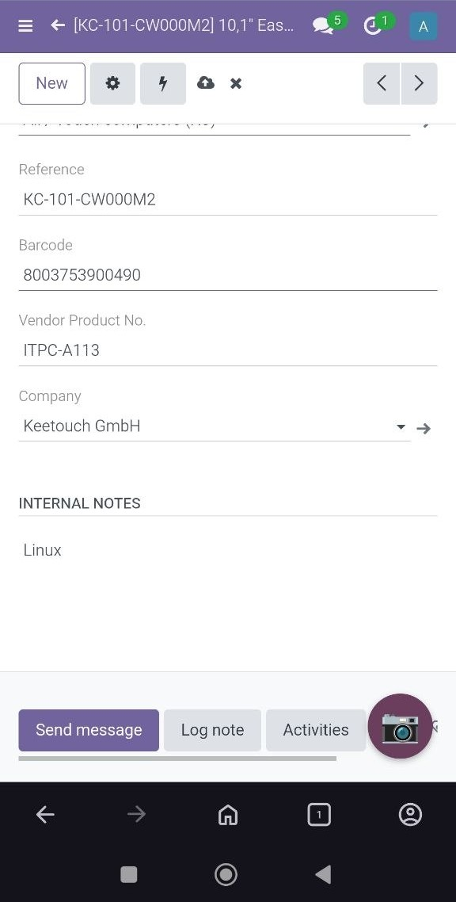
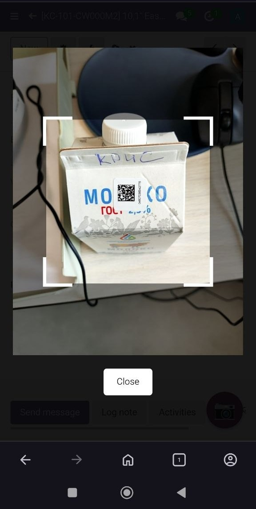
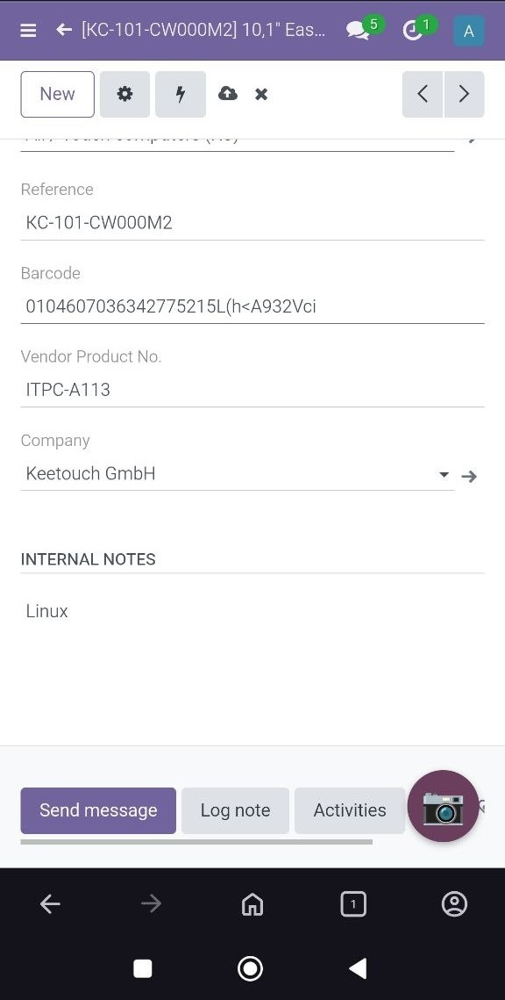

Mobile Barcode Scanner
This module adds a floating camera button on all backend pages. When clicked, it opens a QR/barcode scanner using the device's camera (mobile or desktop). Scanned codes are inserted into the currently focused input field.
Features
- Floating button (📷) appears on every page – no need to navigate to a special screen.
- Works on mobile phones (Android, iOS) and desktop computers with a webcam.
- Supports both QR codes and 1D barcodes (EAN-13, Code 128, etc.).
- Scanned value is automatically inserted into the active text field (input or textarea).
- If no field is focused, the module saves the scanned code and prompts to click into any field to paste it.
- Uses the lightweight html5-qrcode library.
Screenshots






Usage
- Install the module.
- Click on any text field (e.g., search bar, product barcode field, quantity field).
- Tap the floating camera button (bottom‑right).
- Grant camera permission when prompted.
- Point the camera at a QR or barcode.
- The scanned text will appear in the previously focused field.
Technical details
The module adds a custom JavaScript asset that injects the button and scanner overlay. No extra Python code is required. Tested with Odoo 18 Community Edition.
Support
For issues or suggestions, please contact: yogannnn@gmail.com